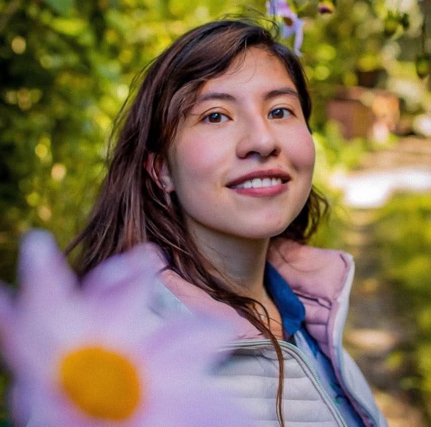
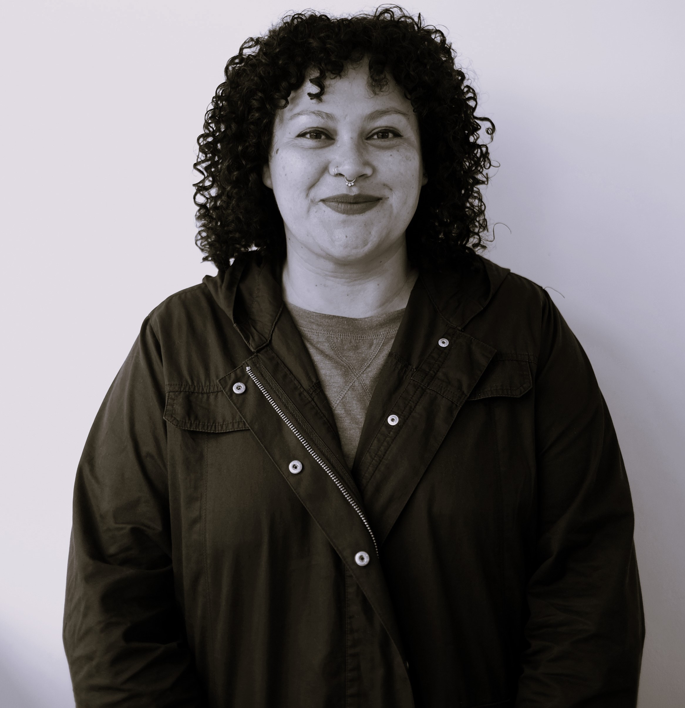
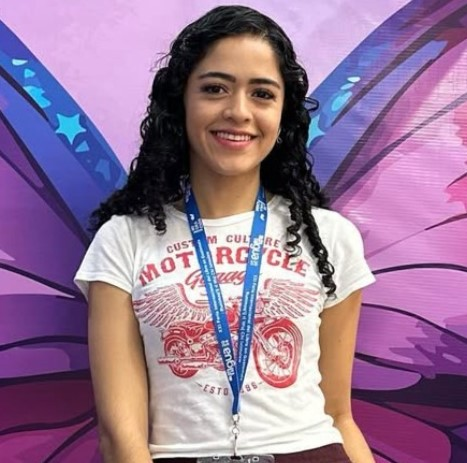
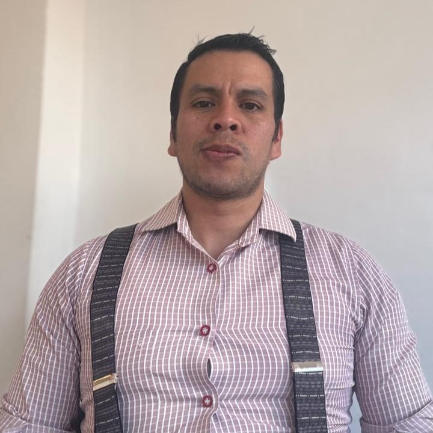

Para gustos hay colores, así como para cine hay géneros que nos permite conectar con nuestra
personalidad e incluso nos hace resignificar nuestra propia vida, el cine es una de las artes de la
actualidad que puede definir a la sociedad y conectar con nuestras emociones.
Sentir, llorar, gritar, sonreír, dejar de respirar cuando ves el mar, asustarte si todo esta oscuro,
suspirar por escenas con las que te identificas, emociones, sentimientos y recuerdos, eso es lo que
el cine nos puede provocar porque estamos ante un arte emocional, que por medio de fotografías en
movimiento nos cuenta una historia que puede ser real o no.
El cine que ha existido por más de 100 años y evoluciona conforme a la tecnología y la sociedad,
pero quiero resaltar el cine independiente, que surge por la idea de tener la libertad de filmar y
no seguir las reglas del cine comercial, son obras que permite al cineasta mostrar temas desde su
perspectiva y que en muchas ocasiones se tratan temas difíciles de hablar pero que por medio de un
lenguaje corporal se puede expresar e interpretar lo que no es sencillo de decir.
El cine es un arte que puede impactar en la vida de las personas e incluso resignificar lo que somos
y nuestro papel en la sociedad. El cine trata de contar una historia en dos horas, pero nosotros le
damos el significado al final.
El festival cultural y feria del libro Tu'jil ha sido mucho más que una actividad cultural de tres
días, ha sido un refugio, un encuentro cálido donde la amistad florece. En este espacio he podido
encontrarme por lo que puedo nombrarlo como un espacio seguro, en donde nuestro feminismo no ha sido
motivo de satanización, sino una manifestación legítima de nuestra lucha.
En una sociedad que con frecuencia intenta silenciar nuestras ideas y deslegitimar nuestras luchas,
este festival se convierte en un respiro, en un territorio en el que nuestras palabras son
escuchadas y nuestras experiencias, validadas. Aquí, podemos reconocernos en nuestras diferencias y
similitudes, construyendo juntas un horizonte donde la sororidad ha sido un cimiento.
El festival es una apuesta pública, un acto de resistencia y reivindicación. Nos recuerda que
deberemos reorientarnos y manifiesta la importancia de recuperar y adueñarnos de nuestros espacios,
de hacerlos nuestros sin pedir permiso. Es una afirmación de que la cultura, la literatura y el arte
son herramientas poderosas para la transformación social y para la visibilización de nuestras
historias.
Cada conversación, cada libro abierto, cada expresión artística en este festival reafirma que
seguimos avanzando, que seguimos reclamando lo que nos pertenece, un espacio en donde podamos ser,
pensar y existir sin miedo. En Tujil, el feminismo encuentra su lugar, y con él, todas nosotras.

Pertenecer es uno de los sentimientos que la mayor parte de los seres humanos,
inconscientemente,
buscamos a lo largo de nuestras vidas. El sentido de pertenencia nos hace sentir unidos a
nuestra
familia, grupo de amigos, lugar de trabajo e incluso a una cultura.
Pero, ¿Qué pasa con las personas que crecimos sin una “cultura predominante”? Nos hacemos llamar
mestizos porque, al final, es lo que somos: una mezcla de antepasados con distintas culturas,
ideologías, creencias e incluso comportamientos. Quienes intentaron empatar sus diferencias
crearon
lo que hoy conocemos como mestizaje.
Es muy interesante conocer la historia de dónde venimos, pero a veces pareciera que se mezclaron
tantos orígenes que, al final, ninguno terminó sobreponiéndose, y a quienes ahora buscamos una
identidad nos cuesta encontrar nuestra raíz más profunda.
¡Qué experiencia tan excepcional el conocer diferentes culturas: cuando comparten sus raíces,
sus
creencias, su razón de ser! Y no puedo dejar de preguntarme: ¿con qué nos identificamos los
mestizos?, ¿cuál es la manera de demostrar el amor hacia nuestras raíces? ¿Nos sentimos
realmente
pertenecientes a una “cultura” o solamente vivimos sin comprender bien de dónde venimos y con
qué
nos identificamos?
A veces pareciera que vivimos con el miedo de no poder experimentar la cultura de nuestros
antepasados por temor a ser señalados de “apropiación cultural”, cuando lo único que estamos
buscando es ese vestigio que nos haga decir: “¡De aquí soy, de aquí vengo, aquí pertenezco!”.
Las conversaciones escritas sirven para contar nuestra cotidianidad, frustraciones o sueños. Una
ventaja de la mensajería electrónica es que desbordamos ideas que, sin buscarlo, quedan
inmortalizadas. Los chats se convierten en archivos históricos que visitamos para releer y, quizá,
descrubrir que uno de esos tantos mensajes trascendió.
Eso me pasa con el Tujil, pude atestiguar -casi- el momento de su concepción. Ante esta tercera
edición, este texto es una declaración testimonial que, por su naturaleza, tendrá algunos errores de
memoria o sesgos, los cuales pueden subsanarse con los puntos de vista de otros integrantes del
equipo.
En 2022 Dardón me contó una idea, de las tantas que revoloteamos, que me pareció más un sueño,
aunque estaba llena de una profunda convicción de que era posible. Los primeros pasos fueron
conversaciones para conocer experiencias similares e invitaciones para sumarse a la iniciativa,
entre confirmaciones y marchas antes de zarpar, se conformó un equipo. Otro mensaje «se llamará
Festival Tu’jil». Así nació el primer Festival Cultural y Feria de Libro Tujil (2023), mi memoria
recuerda la lista de posibles autores, las propuestas de presentaciones y actividades, ese arte de
fondo amarillo. He de aclarar que, por ciertos motivos, tengo una laguna mental de esta época, así
que me voy directo al 19 de mayo, cuando todo se materializó. La realidad sobrepasó al sueño y uno
no era suficiente.
Por espacio, no puedo explicar el enorme esfuerzo que ha representado para todo el equipo: largas
reuniones -no me incluyo porque soy la integrante que vive lejos-, carreras por los permisos,
búsqueda de alianzas, la organización y la entrega en cada etapa.
En la segunda edición (2024) aumentaron las presentaciones de libros y artísticas, se contó con la
presencia del territorio Kakchiquel, elevando el interés de las personas visitantes, patrocinadoras,
autoras y artistas, esto lo afirmo con datos. Para el equipo representó un compromiso mayor y desde
ese momento ya se estaban formulando ideas para el futuro.
Se dice que la crianza no es individual, debe ser en comunidad, el Tujil ha crecido así, con el amor
y aportes de sus integrantes, temporales y permanentes. La idea que nació de una persona fue
compartida para alimentarla en colectivo, nunca para beneficio propio, sino con el fin de servir a
un pueblo, de que sea apropiada por este y les brinde, por unos días a un espacio lleno de cultura,
arte y libros.
Dos Festivales no han sido suficientes, sean bienvenidos al tercer Festival Cultural y Feria de
Libro Tujil, 2025.

Cortázar, Pizarnik, Cervantes, Asturias, Austen. Seguramente, estos apellidos les serán familiares.
En la era digital, las redes sociales forman parte de nuestro día a día. El deseo de exponer cómo
nos sentimos o cómo queremos ser vistos nos lleva a compartir en redes frases o textos que tengan,
eso sí, una imagen “aesthetic”, porque no podemos permitirnos subir nada soso y simple, ya que
seguramente no tendrá vistas ni likes. Atraer la atención y lograr que, por ese post, se interesen
en los libros y autores o, por lo menos, sembrar la semilla de la curiosidad. Ese es el “trabajo” de
los creadores de contenido literario.
Pero, ¿quiénes son estos creadores de contenido que nos permiten descubrir nuevos autores y obras? Y
es ahí cuando entras a su perfil y te das cuenta de que son una pseudoespecie de “influencer”. ¿Pero
de libros? Es justo reconocer el esfuerzo de crear estos espacios en las redes sociales (porque los
hay en todas las plataformas) que fomentan la literatura desde sus espacios, sin ser formalmente a
traves de carreras cientificas “estudiosos de las letras”, pero su pasión los hace ya doctos, por el
simple amor a la literatura, y lo hacen para conectar con presentes y futuros lectores.
Mi caso particularmente, dara cinco años atrás, cuando comencé a leer con voracidad y necesitaba
desahogar todo lo que pensaba sobre los libros que leía. En mi opinión, el contenido de estos libros
es que eran tan increíbles que sentía la imperiosa necesidad de compartirlos con los demás. Me
convertí en una “bookstagramer/booktoker”, compartiendo reseñas, presentaciones de libros, novedades
literarias y mi experiencia en ferias de libros del país. Desde entonces, mi vida gira en torno a
los libros, los autores y las actividades culturales y literarias. Crear un espacio seguro donde
pueda tener una comunidad de lectores ha sido, sin duda, mi mejor decisión tomada en pandemia.
En un mundo digital donde la superficialidad puede dominar, es más importante que nunca: tener
espacios de literatura en redes sociales.
Brenda Peralta Chacón, Brindisbook

Cuando los ancestros garífunas tocaron tierra centroamericana, los tambores retumbaron como ecos de
una historia que ya estaba escrita en el viento. Salieron de Yurumein, la isla que el destino les
arrebataría, tras un naufragio que mezcló la sangre africana con la esencia indígena caribe.
Llamados "caribes negros", fueron testigos de la traición de los imperios y de la cruel danza de la
conquista. Expulsados de San Vicente en 1797, emprendieron un viaje errante por Belice y Honduras
hasta que, en 1802, sus pies tocaron las arenas de Gulfu Yumuoun, la Boca del Golfo.
Allí, el tiempo pareció detenerse. En 1831, Livingston nació bajo decreto guatemalteco, y las casas
de madera y techos de palma florecieron en medio de la brisa salada. En sus cocinas se gestaban los
sabores eternos del tapado y el pan de coco, mientras la lengua garífuna susurraba los secretos de
los ancestros. La yuca se convertía en casabe, y los tambores, con cada golpe, invocaban espíritus
que nunca abandonaron el mar.
Los días de gloria buscan desvanecerse, pero la resistencia de este pueblo aguerrido restituye su
cultura, sus letras, sabores, colores y sonidos. Es esta resistencia la que conocemos como cultura.
La lucha no solo es contra el olvido, sino también contra el racismo, la expulsión y otros elementos
que buscan invisibilizar la diversidad que somos.
El territorio garífuna no es un extraño en esta tierra; compartimos más que el nombre del país. Hay
una riqueza invaluable cultivada en el mar, de la cual el Caribe es testigo, y es indispensable
coincidir y compartir cada vez que sea posible.